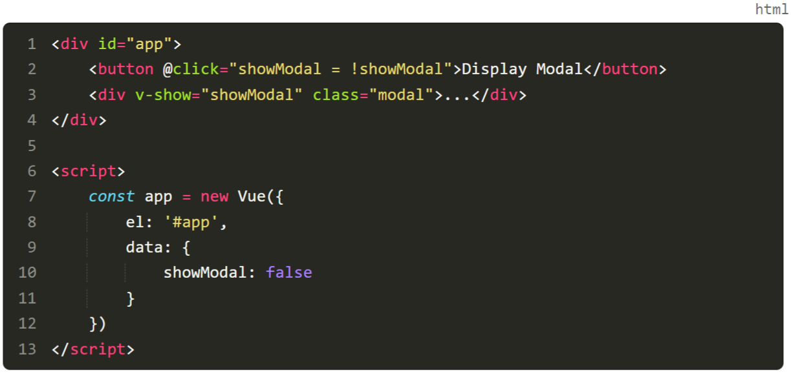
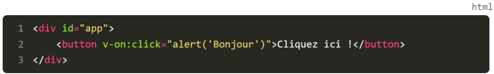
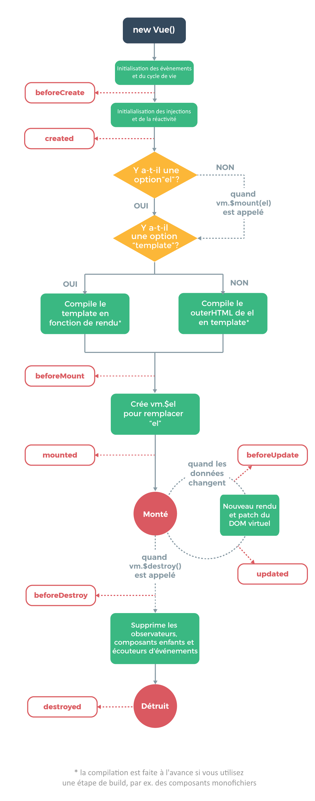
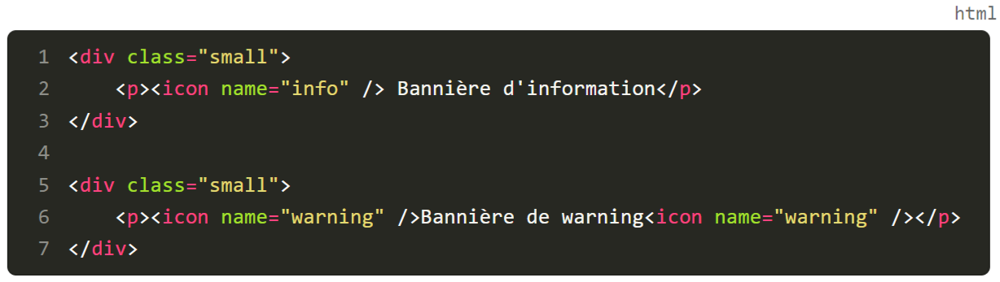
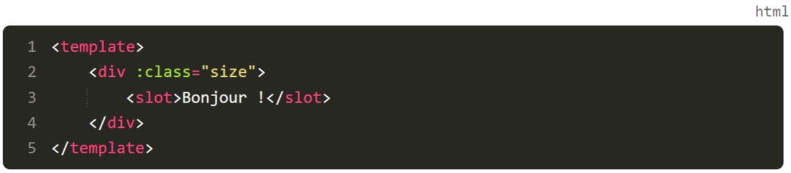

Vue.JS
- Ressource -
- Cours & Tutos -
Découvrez le monde des applications monopages
Dans le modèle traditionnel du développement web, lorsqu'un utilisateur clique sur un lien pour aller sur une nouvelle page ou doit mettre à jour le contenu d'une page,
la page entière doit généralement être rechargée.
Pour les utilisateurs qui paient à la quantité de données consommées, la facture s'alourdit inutilement.
L'expérience utilisateur est ainsi souvent détériorée.
Au début des années 2000, le concept d'applications monopages (Single Page Applications) s'est fait connaître mondialement, avec pour but de résoudre ces problèmes.
Les utilisateurs ne chargent une page web qu'une seule fois.
Les contenus de la page sont mis à jour de façon distincte plutôt qu'au niveau de la page entière,
JavaScript contrôle le lancement de nouvelles pages au sein du même domaine,
Cette idée a pu prendre vie au fur et à mesure, car les navigateurs et l'équipement des utilisateurs ont gagné en puissance.
Dans le web moderne, les SPA sont le plus souvent construites grâce à des frameworks frontend.
Découvrez notre framework : Vue
Lorsqu'il s'agit d'apprendre à utiliser un framework frontend, de nombreuses options s'offrent à nous :
Devenir membre contributeur d'un projet est beaucoup plus accessible.
Les personnes qui ne sont pas expertes en JavaScript peuvent contribuer à un projet avec un minimum d'accompagnement.
Les développeurs peuvent passer plus de temps à être productifs plutôt qu'à apprendre à utiliser un nouvel outil.
De plus, Vue a été conçu dès le départ pour être aussi intuitif que possible pour les développeurs.Ajoutez Vue à votre site
Alors que pour bon nombre de frameworks, vous devrez passer par des outils de build complexes comme webpack, force est de constater que l'ajout d'une instance de Vue.js à votre site est aussi simple que d'intégrer une balise script sur votre page HTML.
Dans la console JavaScript
Définissez où Vue devrait apparaître sur votre page
Même si nous sommes parvenus à charger Vue sur notre page, cela ne signifie pas encore que notre site est devenu une application monopage.
« el » , qui est l'abréviation d'element.#app
, div
, .app
).#app
) est considéré comme étant une bonne pratique, car votre application devra être reconnue de façon unique sur une page.<. html>
ni <. body>
.
Apprenez à stocker des données
Découvrez comment stocker les données
Comme pour toute autre application, nous avons besoin de stocker les données afin de pouvoir les réutiliser et effectuer des actions pour l'utilisateur.data
qui a comme valeur un objet.
Découvrez comment afficher le rendu des données
Lorsque nous voulons afficher nos données dans notre application web, Vue utilise la syntaxe en "moustache" (entre deux accolades) pour afficher le rendu des données.
Bien que l'espace entourant la variable dans
{{ costOfApples }}
soit optionnel,
ce formatage est recommandé, car il facilite la lecture par rapport à l'alternative plus dense
{{costOfApples}}
.
Entraînez-vous
Vous trouverez le code source des exercices dans le repo GitHub du cours, dans le dossier cafe-avec-vue
.P1C2-Begin
.
Instructions
Ajoutez Vue.js à index.html
pour le convertir en application monopage.
Votre application doit avoir une propriété dans data
appelée restaurantName
.
Le nom du restaurant doit être rendu à l'aide de la syntaxe en moustache.
En résumé
installer Vue sur une page web sans l'aide d'outils de build
mettre en place une nouvelle instance de Vue
associer Vue à un élément HTML
définir un espace de stockage de données simple
afficher le rendu de données à l'aide des doubles accolades
1.2 Stockez et gérez des données
Gardez vos données à jour
Lors de la création d'une application, un des points les plus critiques est de s'assurer que les données sont toujours à jour et aussi faciles à maintenir que possible.
Exemple avec un panier d'achats
Exemple avec un panier d'achats
Découvrez les données réactives
Si vous avez déjà utilisé Excel et des spreadsheets, vous êtes très probablement familier avec la création d'équations dans des cellules de données.
Les données se mettent à jour automatiquement dans une spreadsheet
Faites le lien entre les données réactives et Vue
Grâce aux connaissances que vous avez acquises dans le chapitre précédent, mettons maintenant en place un data store pour notre petit marché Vue !
costOfApples
, costOfBananas
et costOfCoconuts
.{{ totalAmount }}
.Découvrez les propriétés calculées
Les propriétés calculées (computed properties) nous permettent de définir une valeur réutilisable qui est mise à jour en fonction d'autres propriétés data
.data
, nous commençons par ajouter une propriété computed
(calculée ) qui utilise un objet pour définir les propriétés que nous voulons.
data
,{{ totalAmount }}
au lieu de {{ costOfApples + costOfBananas + costOfCoconuts }}
.
Cet exemple utilise la syntaxe ES6 pour définir une fonction (c'est-à-dire que
totalAmount() { ... }
est identique à
totalAmount: function() { ... })
.
Cependant,
n'utilisez pas les fonctions fléchées , car cela réinitialisera le contexte de
this
.
Cela cassera l'application puisque vous avez besoin de
this
pour pointer vers l'instance de Vue, afin de faire référence aux propriétés de
data
.
app.costOfApples = 4
.Entraînez-vous !
Vous trouverez le code source des exercices dans le repo GitHub du cours, dans le dossier cafe-avec-vue
.P1C3-Begin
.
Instructions
Remplacez le nom du restaurant par "Café avec vue". Cela devrait être mis à jour partout sur le site.
Déplacez les données sur le restaurant dans le data store (le numéro de téléphone, l'adresse email et l'adresse postale).
Créez une propriété calculée pour le texte de copyright dans le footer.
En résumé
Dans ce chapitre, vous avez découvert :
les données réactives et leur importance dans la création de données maintenables dans une application ;
comment utiliser data
pour gérer les données dans votre application Vue.js ;
comment utiliser les propriétés calculées (computed
properties) pour simplifier votre code et la gestion de vos données.
1.3 Utilisez les directives Vue pour gérer des problèmes courants
Découvrez ce qu’est une directive
Les directives nous fournissent un moyen standard pour résoudre les problèmes courants.v-
.
v-if
,v-else-if
,v-else
v-show
v-for
v-bind
v-on
v-model
Dans ce chapitre, nous allons passer ces directives en revue et voir comment les utiliser pour créer des applications Vue puissantes et facilement compréhensibles par tous.
Conditionnez l'affichage du contenu v-if
et v-show
L'un des scénarios les plus courants dans n'importe quelle application frontend est le besoin d'afficher ou de masquer le contenu en fonction de certaines conditions.v-if
et v-show
.
v-if
,v-else-if
,v-else
Comme le suggèrent les mots-clés de la directive, cette dernière suit la structure de rendu conditionnel standard if/then
de JavaScript.
Bien qu'il ressemble à une chaîne de caractères, le texte situé entre les guillemets des directives est interprété comme du JavaScript et non comme une chaîne de caractères.
v-show
Cette directive peut sembler très similaire à la directive v-if
; pourtant, les deux ne sont pas interchangeables.v-show
est généralement utilisée dans le but de contrôler la visibilité d'un élément faisant l'objet d'une permutation (toggle, en anglais) fréquente.

Vous n’avez pas encore vu la directive
v-on
(abrégée
@
), par exemple
@click
.
Ceci n’est pas gênant pour la compréhension du but du code et ne vous inquiétez pas, on voit ça juste après !
La principale différence entre les deux directives est que
v-show
permute la visibilité de l'élément HTML grâce au CSS,
alors que
v-if
supprime complètement l'élément du DOM.
Bouclez sur votre contenu v-for
On peut également citer un autre scénario courant qui consiste à devoir répéter un élément HTML.v-for
permet de réaliser cette tâche.for ... in
.
Définissez des attributs HTML de façon dynamique v-bind
Vous serez très souvent tenté d'utiliser une propriété data
pour définir l'attribut d'un élément, plutôt que de le coder en dur.v-bind
.
Vous auriez pu penser que nous pourrions faire
< a href=”{{ item.url }}”>...< /a>
.
Cependant, si vous faites ça, vous aurez dans le dur en HTML
< a href=”{{ item.url }}”>...< /a>
et non pas
< a href=”https://github.com”>...< /a>
par exemple.
La directive
v-bind
est couramment utilisée via son abréviation
:
.
En d'autres termes, au lieu d'écrire
v-bind:href="item.url"
, on écrit généralement plutôt
:href="item.url"
.
Écoutez des événements et répondez-y v-on
Lorsque vous souhaitez écouter certains événements sur un élément, Vue vous facilite la tâche avec la directive v-on
.

La directive
v-on
est couramment utilisée via son abréviation
@
.
Au lieu d'écrire
v-on:click="alert('Bonjour')"
, on écrit généralement plutôt
@click="alert('Bonjour')"
.
data
.
data
dans des valeurs calculées en les préfixant avec this
, vous ferez la même chose ici !
Mettez à jour les données dans des formulaires v-model
Lorsque l'on travaille avec des formulaires, on préfère mettre à jour le data store en conséquence.v-on
avec v-bind
,v-model
.data
que vous souhaitez mettre à jour lorsque l'utilisateur interagit avec un formulaire.
Entraînez-vous
Vous trouverez le code source des exercices dans le repo GitHub du cours, dans le dossier cafe-avec-vue
.P1C4-Begin
.
Instructions
Utilisez la directive v-for
pour afficher tous les éléments de simpleMenu
Utilisez la directive v-if
pour indiquer si un article est "En stock" ou "En rupture de stock".
Utilisez la directive v-bind
pour rendre dynamiquement chaque image du menu et remplir son texte alt
.
Utilisez la directive v-on
pour augmenter le total du panier lors de l'ajout d'un article du menu avec une fonction définie dans les méthodes appelées addToShoppingCart
.
Utiliser v-model
pour permettre à l'utilisateur de mettre à jour le nombre d'articles qu'il souhaite mettre lorsqu'il fait un ajout au panier.
En résumé
Vous avez acquis les compétences nécessaires pour utiliser les directives dans le but de :
afficher et masquer du contenu ;
réaliser une boucle à travers une liste de données et afficher le rendu de son contenu ;
mettre à jour des attributs HTML de façon dynamique ;
écouter des événements auxquels vous pouvez répondre ;
créer des fonctions JavaScript que Vue.js peut utiliser ;
configurer des formulaires pour que votre data store soit mis à jour au fur et à mesure que l'utilisateur interagit avec lui.
2.1 Créez un nouveau projet avec Vue CLI
Installez Vue CLI
Pour commencer à utiliser la CLI de Vue, la version de Node 8.9 ou supérieure est nécessaire (v8.11.0 ou + est recommandée).
npm install -g @vue/cli
vue --version
Créez un nouveau projet
Créer un nouveau projet avec Vue CLI est une opération simple.
vue create my-first-vue-cli-app
Exemple de preset que vous verrez en utilisant la commande Vue create
Entrée
pour choisir notre sélection.
Pour naviguer dans l'outil Vue CLI, vous devez utiliser :
les touches fléchées pour la direction ;
la touche Retour/Entrée pour choisir votre option ;
la barre d'espace pour sélectionner une option parmi les inputs de type "checkbox".
Liste des choix possibles quand vous choisissez de configurer votre app manuellement
Lorsque vous choisissez CSS preprocessors, le cercle devient vert pour vous indiquer qu'il est sélectionné
Par ailleurs, vous avez peut-être également remarqué que vous pouvez mettre en place vos outils de tests d'intégration à cet endroit.
Il vous sera utile si vous souhaitez activer le « mode historique » pour le routeur. Tapez n
et appuyez sur la touche Retour
.
Pour notre préprocesseur CSS, nous choisirons Sass/SCSS (with node-sass)
Pour notre linter, nous choisirons ESLint with error prevention only
Pour la configuration de lint, choisissez Lint on save
Pour l'emplacement souhaité de la configuration, choisissez In dedicated config files
Vous disposez également d'une option permettant de sauvegarder cette configuration pour de futures applications,n
pour que notre configuration ne soit pas sauvegardée comme preset.
Vous n’avez pas tout ça qui s’affiche ?
[1/4] üî笆 Resolving packages...
Vue CLI dispose également d'une interface utilisateur très performante et agréable à utiliser lancée en local.
Cette interface dispose d'une version en français pour celles et ceux qui préfèrent.
Vous pouvez la lancer avec la commande
vue ui
.
Pour en savoir plus, consultez la
documentation .
Découvrez l’architecture d’une application Vue CLI
Lorsque vous ouvrez votre nouveau projet, my-first-vue-cli-app
,
node_modules : public : favicon.ico
et le fichier index.html
de base qui serviront à générer le reste de votre application ;
src : .gitignore : /dist
, qui est généré de manière automatique à chaque build (et ne nécessite donc aucun suivi),node_modules
, qui est automatiquement recréé à chaque lancement de la commande npm install
ou yarn install
;
package.json :
serve : build :
src :
Assets : Components : main.js :
En regardant cette liste, vous avez peut-être remarqué que j'ai omis un fichier important : App.vue
.
npm run serve
http://localhost:8080
) qui vous permet de voir et d'interagir avec les changements dans votre application au fur et à mesure que vous codez.Vue DevTools , qui est une véritable boîte à outils pour les développeurs utilisant Vue.
Une fois que cette commande est lancée, le serveur sera toujours accessible.
Dès que vous voulez couper cette connexion, exécutez la combinaison de touches suivantes dans votre console :
Ctrl + C
.
Entraînez-vous
Vous trouverez le code source des exercices dans le repo GitHub du cours, dans le dossier cafe-avec-vue
.P2C1-Begin
.
Instructions
Créer un nouveau projet avec Vue CLI qui est appelé cli-version avec la configuration suivante :
Préprocesseur CSS (Sass/SCSS) avec node-sass.
ESLint avec prévention des erreurs uniquement.
Lint on Save.
Dans des fichiers de configuration dédiés.
Ne pas enregistrer comme un preset.
En résumé
Dans ce chapitre, vous avez appris :
comment installer Vue CLI ;
comment créer une nouvelle application Vue avec Vue CLI ;
comment configurer une application Vue avec Vue CLI ;
comment sont structurées les applications générées par Vue CLI.
2.2 Facilitez la maintenance grâce aux composants monofichiers
Appréhendez le problème de la complexité
Lors de la création d'un site web, nous sommes très souvent amenés à répéter notre code et cela rend souvent la maintenance un peu difficile.
Découvrez la solution : les composants
Pour résoudre ce problème, le concept de composants a été popularisé.
L'architecture basée sur les composants est l'un des éléments les plus importants du développement frontend,
.vue
.
Script : où vit votre JavaScript ;Template : où vit votre HTML ;Style : où vit votre CSS.
Utilisez les composants monofichiers
Nous allons remanier notre exemple de navigation en utilisant notre nouveau composant dans Vue.App.vue
et tapez :
J'ai importé le composant HomeLink
en utilisant l'importation ES6.
J'ai enregistré le composant via la propriété components
, qui prend un objet comme valeur avec des paires clé-valeur pour enregistrer les composants"HomeLink" : Homelink
).
Enfin, j'ai remplacé toutes les références de < a href="/">Home< /a>
par notre nouveau composant < HomeLink />
.
Cette action est très puissante, car toutes les modifications que vous souhaitez apporter au lien d'accueil peuvent maintenant être faites à partir d'un seul endroit.Gérez la communication entre vos composants : les props
Bien que l'exemple ci-dessus soit utile car il peut être réutilisé, il est plutôt limité puisqu'il comporte une URL et un texte codés en dur.props
:props
est un attribut que vous pouvez définir au niveau du composant qui sera transmis directement au template.HomeLink
et transformons-le en un composant plus générique : NavLink
.
props
pour notre nouveau composant :
url
: qui alimentera notre attribut href ;text
: qui remplira le texte qui vit dans la balise anchor.
Il sera utilisé comme ceci :
Exercez-vous
Vous trouverez le code source des exercices dans le repo GitHub du cours, dans le dossier cafe-avec-vue
.P2C2-Begin
.
Instructions
Créer un nouveau projet avec Vue CLI qui est appelé cli-version avec la configuration suivante :
Migrez le contenu de index.html
vers cli-version/src/App.vue
Migrez le répertoire des images
vers cli-version/public
Mettez à jour le chemin (path) des images dans simpleMenu
pour qu'il soit relatif et non plus absolu (en supprimant le .
qui préfixe l'URL).
Créez un composant pour MenuItem.vue et migrez les éléments (items) du menu.
Utilisez des props pour vous assurer que les données de MenuItem
sont toujours correctement rendues et qu'elles peuvent toujours mettre à jour le total du panier (astuce : vous pouvez transmettre des fonctions dans les props).
En résumé
Dans ce chapitre, vous avez appris à :
identifier des composants sur une page web ;
créer des composants avec des composants monofichiers ;
utiliser des composants dans d'autres composants ;
transférer des données dans des composants avec les props.
2.3 Gérez la navigation de votre application avec le routeur Vue
Créez le routage de votre application monopage
Comme nous l'avons vu précédemment, le terme « Applications monopages » (SPA) indique qu'une seule page est chargée.vue-router .
Installez Vue Router
Pour ajouter Vue Router à notre application, nous utiliserons Vue CLI :vue add router
Une fois l'installation terminée, vous devriez observer que la CLI a modifié un certain nombre de fichiers afin de s'assurer que tout fonctionne correctement.main.js
, vous verrez que Vue CLI a automatiquement configuré la propriété Router en la rattachant à votre instance de Vue.router/index.js
.
Découvrez l’anatomie du routeur
Lorsque vous ouvrez le fichier router/index.js
dans votre éditeur de code, vous devriez voir quelque chose de similaire à ceci :
path (chemin) : l'URL correspondant au composant ;name (nom) : le nom de cette route pour l'étiquetage et le débuggage ;component (composant) : le composant qui doit s'afficher lorsque le path est trouvé.
Comprenez le fonctionnement de Vue Router
Il existe deux composants principaux que Vue Router utilise et que vous devrez apprivoiser pour vos applications :Créez des routes dynamiques
Vous devrez parfois faire correspondre un modèle d'URL à une page spécifique.ItemDetail.vue
pour voir le détail de l'élément.matching de route dynamique .
La variable dynamique qui pourra être modifiée dans l'URL est marquée par deux-points.
ItemDetail
d'extraire les paramètres à utiliser :
http://localhost:8080/item/croissant
, notre page affiche :
Entrainez-vous
Vous trouverez le code source des exercices dans le repo GitHub du cours, dans le dossier cafe-avec-vue
.P2C3-Begin
.
Instructions
Sauvegardez temporairement le contenu de App.vue
dans un fichier séparé car il sera écrasé par l'installation.
Ajoutez le plugin vue-router
à l'application et n'activez pas le mode historique lors de l'installation (Use history mode for router? => N
).
Migrez les données temporairement sauvegardées de l'ancienne App.vue
vers Home.vue
Créez une route statique pour la page de contact à l'url /contact
Migrez les coordonnées de Home.vue
vers Contact.vue
Ajoutez le lien du routeur de contact à App.vue
Activez le mode historique dans la configuration de votre routeur.
En résumé
Le routage peut être un peu difficile à mettre en place, mais vous savez maintenant :
installer Vue Router sur votre application Vue CLI sans le mode history ;
configurer des routes ;
utiliser router-view
et router-link
pour gérer le routage ;
utiliser le matching dynamique de route pour vos pages personnalisées.
2.4 Déterminez quand votre code doit s’exécuter
Découvrez le cycle de vie d’un composant
L'un des indicateurs les plus couramment utilisés pour mesurer la performance d'un site est le temps nécessaire avant que l'utilisateur puisse interagir avec le site.le concept de cycle de vie des composants (components lifecycle) ,
Create :Mount :Destroy :
Il est très utile de connaître ces étapes, car vous aurez besoin de définir une stratégie concernant le moment où une action particulière doit s'exécuter.Découvrez les hooks de cycle de vie
Pour résoudre ce problème de timing, les frameworks comme Vue proposent des hooks de cycle de vie (life cycle hooks) .
beforeCreate
created
beforeMount
mounted
beforeDestroy
destroyed
Comme vous pouvez le voir dans la liste, chaque étape dont je vous ai parlé plus tôt est accompagnée d'une paire de hooks de cycle de vie,beforeCreate
serait impossible puisque l'élément n'existe même pas encore.
Schéma du cycle de vie (life cycle) d'un composant

Schéma du cycle de vie d'un composant
Pour une meilleure compréhension du cycle de vie d'un composant dans Vue, vous pouvez consulter le
diagramme de cycle de vie dans la documentation.
Utilisez des hooks de cycle de vie
L'utilisation des hooks de cycle de vie est particulièrement facilitée par Vue.data
ou computed
, il s'agit simplement d'ajouter une autre propriété à votre objet de configuration de Vue.
this
, comme partout ailleurs.
Entrainez-vous
Vous trouverez le code source des exercices dans le repo GitHub du cours, dans le dossier cafe-avec-vue
.P2C4-Begin
.
Instructions
Utilisez un hook de cycle de vie avant que MenuItem
ne soit rendu En résumé
Fort de vos nouvelles connaissances sur les hooks de cycle de vie, vous pouvez maintenant :
définir une stratégie pour fixer le meilleur moment auquel un code donné va s'exécuter ;
implémenter des hooks de cycle de vie dans votre application en cas de besoin.
3.1 Gérez les styles de votre application
Configurez un préprocesseur
Actuellement, lorsqu'il s'agit d'écrire du CSS, la plupart des codebases frontend utilisent un préprocesseur (comme Sass, LESS, etc.).
Sass ⇒ *.sass ou *.scssLESS ⇒ *.less
Pour tirer parti de la puissance des préprocesseurs, tout en les maintenant couplés à votre composant, vous pouvez utiliser la prop lang
.lang
au bloc de style.
Gérez le CSS
Pour comprendre comment gérer votre CSS, il faut comprendre de quelle façon style
est compilé en production.Gérez le style global par défaut
Lorsque style
ne comporte aucune configuration additionnelle,
Cela peut sembler étrange puisque la plupart des modèles traditionnels intègrent un fichier
.css
au lieu d'incruster le bloc de style, mais c'est en fait très efficace.
Cela garantit en effet que les utilisateurs ne reçoivent que la CSS dont ils ont besoin, au lieu de télécharger du code superflu, qui ne sera jamais utilisé.
Utilisez des styles délimités
La technique des styles délimités (scoped styles) est devenue populaire récemment.scoped
au bloc de style, afin que le CSS ne s'applique qu'aux éléments du composant courant.data
personnalisé est ajouté à la classe CSS et à l'élément HTML, afin que les styles restent « scopés », donc délimités.Avant le build
Après le build
Ajoutez des modules CSS
Bien que la technique des scoped styles puisse être efficace pour certains cas,.button
sont courants.
Les modules CSS sont appréciés pour les possibilités de modularité et de composition de CSS offertes, comme illustré ci-dessous :
module
à < style>
et il ajoutera vos styles avec un hash aléatoire par défaut.
$
dans une classe v-bind:class
.
Découvrez des stratégies pour gérer les styles de votre application
Maintenez vos styles couplés à votre composant
En gardant vos styles au bas niveau, vous vous assurez que les futurs développeurs connaîtront le contexte dans lequel le style a été créé.style.css
src/components/CustomButton.vue
Ne généralisez les styles que lorsque vous avez un cas de réutilisation
Il peut être tentant de tester et de s'en tenir aux méthodes traditionnelles de CSS, en mettant tous les styles dans un fichier CSS partagé.Entrainez-vous
Vous trouverez le code source des exercices dans le repo GitHub du cours, dans le dossier cafe-avec-vue
.P3C1-Begin
.
Instructions
Migrez tous les styles des sites statiques styles.css
dans les fichiers des composants respectifs.
Utilisez votre préprocesseur préféré si vous le souhaitez !
En résumé
Dans ce chapitre, vous avez découvert :
l'utilisation de préprocesseurs dans un composant monofichier ;
les stratégies de gestion des styles avec les scoped styles ;
les stratégies de gestion des styles avec les CSS Modules ;
les stratégies de gestion des styles au fur et à mesure que vous créez des composants.
3.2 Passez des datas entre les composants
Dans les chapitres précédents, vous avez appris à utiliser les props pour passer des données vers un composant.Définissez des props en tant qu'objets
Définir les props comme un simple tableau de chaînes de caractères a l'avantage d'être facile à lire et à comprendre.
title
devrait être une string
list
devrait posséder un comportement itératif, comme un array
ou un object
.
props
est un objet.props
que vous souhaitez utiliser.prop
(par exemple, list
) à laquelle est associée un objet servira à définir la configuration de l'objet.prop
.prop
attendu avec la clé type
qui prend comme valeur un type de données JavaScript.
props
pour fonctionner ou avoir l'apparence souhaitée, ce serait génial de pouvoir le configurer.required
qui prend un booléen en valeur dans notre objet de configuration.
Par défaut, la valeur de
required
est
false
.
prop
n'est jamais définie.default
et de lui associer la valeur souhaitée selon vos besoins.
Vous avez peut-être remarqué que
Array
a une valeur par défaut qui utilise une fonction anonyme pour retourner un tableau vide.
Nous ne l'aborderons pas dans ce cours, mais sachez que les valeurs par défaut des
Arrays
et des
Objects
doivent être retournées par une fonction pour que cela fonctionne correctement.
Entrainez-vous
Vous trouverez le code source des exercices dans le repo GitHub du cours, dans le dossier cafe-avec-vue
.P3C2-Begin
.
Instructions
Utilisez la syntaxe en objet pour définir les propriétés associées à props
dans MenuItem.vue
.
En résumé
Dans ce chapitre, vous avez acquis les connaissances pour :
définir des props à l'aide d'un objet ;
définir des types de prop pour minimiser les bugs potentiels ;
utiliser la prop required
;
définir une valeur par défaut sur une prop.
3.3 Émettez des événements vers des composants parents
Révisez les événements
En développement web, les événements sont des actions ou des occurrences qui se produisent pendant l'utilisation d'un site web.
lorsqu'un utilisateur clique sur un élément ;
lorsqu'un utilisateur appuie sur une touche du clavier ;
lorsqu'un formulaire est soumis ;
lorsque la fenêtre d'un navigateur est redimensionnée.
Lorsque ces actions se produisent, des événements sont émis afin que nous puissions y répondre en utilisant des techniques comme les gestionnaires d'événements.Créez un événement personnalisé
Dans le monde du frontend, la gestion des événements est répandue.v-on
, nous pouvons facilement écouter des événements courants et déclencher des fonctions à volonté.$emit
de Vue.
Utilisez $emit
La fonction $emit
prend deux paramètres :
le nom de l'événement (qui doit être défini en kebab-case) ;
un payload optionnel que vous pouvez utiliser pour passer des données à l'écouteur de l'événement.
src/ChildComponent.vue
Le payload est généralement défini comme un objet.
Écoutez et répondez à un événement émis
Une fois qu'un événement est émis, le composant parent qui utilise le composant enfant est capable d'écouter l'événement via la directive v-on
.
Ajouter un écouteur d'événement (listener) v-on
avec le nom de l'événement personnalisé sur le composant émettant l'événement.
Lui assigner une méthode recevant le payload comme premier argument s'il existe.
src/ParentComponent.vue
Attention cependant :
Entrainez-vous
Vous trouverez le code source des exercices dans le repo GitHub du cours, dans le dossier cafe-avec-vue
.P3C3-Begin
.
Instructions
Supprimez la prop addToShoppingCart
du MenuItem
Créez une nouvelle méthode appelée updateShoppingCart
dans MenuItem
qui émet un événement appelé add-items-to-cart
à Home.vue
pour mettre à jour le panier.
En résumé
Dans ce chapitre, vous avez appris à :
définir des événements personnalisés dans les composants ;
émettre des événements personnalisés à partir de composants enfants ;
écouter des événements personnalisés à partir de composants enfants ;
utiliser le payload des événements personnalisés pour effectuer des actions supplémentaires.
3.4 Créez des composants flexibles en utilisant les slots
Même si les props sont très puissantes, elles ajoutent un niveau de complexité dans l'interaction avec un composant, puisqu'elles demandent un certain niveau de connaissance afin d'utiliser le composant de manière adéquate.
slots
.
Découvrez les slots
L'élément < slot>< /slot>
sert d'emplacement pour du contenu que le développeur peut définir dynamiquement sans props prédéterminées.custom-banner
, nous voulons que les utilisateurs puissent définir différentes bannières personnalisées.CustomBanners
rende le résultat suivant :

CustomBanner
ressemblerait à ceci :src/components/CustomBanner.vue
src/components/CustomBanner.vue
Définissez le contenu par défaut d'un slot
De la même façon qu'il est possible de définir une valeur par défaut pour les props,CustomBanner
,slot
dans le bloc Template
.

Découvrez comment utiliser plusieurs slots
Vous vous demandez peut-être aussi : « Et si je veux utiliser plusieurs slots dans un composant ? »Card
:
slots nommés .Card
, nous donnons simplement une prop name
à chaque slot.
v-slot
sur un élément template
comme ici :
Entrainez-vous
Vous trouverez le code source des exercices dans le repo GitHub du cours, dans le dossier cafe-avec-vue
.P3C4-Begin
.
Instructions
Refactorez le composant BaseButton
en utilisant des slots plutôt que les props qui sont définies pour le moment.
En résumé
Dans ce chapitre, vous avez découvert :
les difficultés induite par le bazar de props ;
la définition de slots sur des composants ;
la définition de contenu par défaut dans les slots ;
l'utilisation de slots nommés pour gérer plusieurs slots.
4.1 Découvrez le principe de state management
Lorsque l'on travaille avec des applications monopages (SPA), le concept de state management (gestion d'état) est un sujet couramment abordé.s'assurer que l'application utilise les bonnes données à tout moment. data
, ce qui signifie qu'il gère son propre state.src/components/GroceryList.vue
< GroceryList>
et le composant enfant < ListItem>
.
GroceryList.
ListItem item="pommes".
ListItem item="bananes".
ListItem item="cerises".
Pour comprendre cela, imaginez que le composant < ListItem>
ait été défini comme suit :
< GroceryList>
doit pouvoir gérer le fait qu'il a été acheté ou non.Récupérez vos datas à la source unique de vérité
Dans les discussions autour de la gestion du state, et parmi les termes couramment cités, apparaît l'idée d'une « source unique de vérité » (qui est aussi parfois abrégée en « SSoT » pour Single Source of Truth).
du point de vue du code, cela s'avère bien plus difficile à gérer,
des bugs apparaissent en plus grand nombre à la suite de cette fragmentation.
C'est pour cette raison que le concept de source unique de vérité est essentiel au succès de tout système de gestion du state.
Entrainez-vous
Vous trouverez le code source des exercices dans le repo GitHub du cours, dans le dossier cafe-avec-vue
.P4C1-Begin
.
Instructions
Évaluez le state actuel de l'application et déterminez où se trouvent les différentes propriétés des données.
Créez un plan ou un document visuel représentant la structure du state de l'application.
En résumé
Dans notre vision du système de gestionnaire de state idéal, ce dernier devrait être capable de :
créer un espace de stockage de données unique qui servira de source unique de vérité pour toutes les données partagées ;
permettre à n'importe quel composant de récupérer des données directement ;
permettre à n'importe quel composant de modifier le data store unique directement.
4.2 Créez un data store centralisé avec Vuex
Vuex est un gestionnaire d'état et une bibliothèque pour les applications Vue.js.Installez Vuex
Grâce à Vue CLI, il suffit d'exécuter la commande suivante dans notre terminal pour ajouter Vuex à notre projet :vue add vuex
Ce que vous devriez voir dans votre terminal
src/main.js
main.js
de plus près, vous remarquerez que le plugin a introduit le store
en tant que nouvelle configuration sur notre instance de Vue.data
pour mettre en place un nouveau data store,store
comme le data store global que nous allons configurer avec Vuex.src/store.js
Rencontrez store/index.js
store/index.js
, vous remarquerez une nouvelle ligne de code que nous n'avions pas encore rencontrée :Vue.use(Vuex)
plugins Vue .
Cette méthode permet d'ajouter une fonctionnalité globale à notre instance de Vue.new Vue()
,new Vuex.Store()
.Configurez Vuex
Comme nous le voyons dans store/index.js
, l'initialisation d'un nouveau store Vuex ne nécessite qu'une seule configuration.
state
mutations
actions
Entrainez-vous
Vous trouverez le code source des exercices dans le repo GitHub du cours, dans le dossier cafe-avec-vue
.P4C2-Begin
.
Instructions
Ajoutez Vuex à l'application.
Vérifiez que la boilerplate pour le store est bien présente dans un fichier comme store/index.js
.
En résumé
Dans ce chapitre, nous avons appris :
ce qu'est Vuex : une bibliothèque de gestion d'état permettant de créer un store centralisé qui deviendra la seule source de vérité de notre app ;
comment installer Vuex sur notre application ;
le fonctionnement de la structure de Vuex.
4.3 Récupérez des données depuis Vuex
Maintenant que nous avons installé Vuex dans notre application, il est temps pour nous de comprendre son fonctionnement.Stockez des données dans Vuex
Dans Vuex, notre data store est défini en tant que state
dans l'objet de configuration store/index.js
.data
que nous utilisons depuis le début.
Une comparaison entre le state du store Vuex et
Une comparaison entre le state du store Vuex et
Du coup, cela veut dire que je devrais tout mettre dans le state Vuex plutôt que dans le data store des composants ?
Récupérez des données dans Vuex
Maintenant que nous savons comment définir les données dans Vuex,Utilisez $store
Au fur et à mesure que vous allez approfondir des techniques plus avancées de Vue et que vous développerez vos connaissances,
this.$options
this.$parent
this.$children
etc...
Il s'agit de propriétés spécifiques à l'instance de Vue sur laquelle vous travaillez ;store
Vuex est injecté à un niveau global à travers tous nos composants,$store
qui nous permettra d'accéder directement à Vuex dans sa totalité.$store
par ce qui suit :mapState
!
Utilisez mapState


 Du coup, cela veut dire que je devrais tout mettre dans le state Vuex plutôt que dans le data store des composants ?
Du coup, cela veut dire que je devrais tout mettre dans le state Vuex plutôt que dans le data store des composants ?